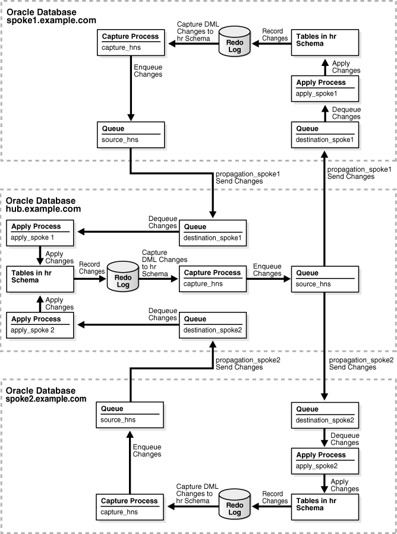

2 Simple Oracle Streams Replication Configuration
This chapter describes simple methods for configuring Oracle Streams replication.
This chapter contains these topics:
2.1 Configuring Replication Using the Setup Streams Replication Wizard
The Oracle Streams tool in Oracle Enterprise Manager Cloud Control includes a Setup Streams Replication Wizard that configures an Oracle Streams replication environment. Using this wizard, you can configure an Oracle Streams replication environment with any of the following characteristics:
-
Replicate changes to the entire source database, selected schemas in the source database, selected tablespaces in the source database, selected tables in the source database, or subsets of tables in the source database
-
Maintain data manipulation language (DML) changes, data definition language (DDL) changes, or both.
-
One-way or bi-directional replication
-
Local capture or downstream capture
The wizard walks you through the process of configuring your replication environment, and you can run the wizard multiple times to configure a replication environment with more than two databases. There are some limits to the types of replication environments that can be configured with the wizard. For example, the wizard currently cannot configure synchronous capture.
You can choose to configure the Oracle Streams replication environment immediately, or you can use the wizard to generate a script. When you generate a script, you can review the script, and edit the script if necessary, before running the script to configure the replication environment.
To open the wizard, complete the following steps in Oracle Enterprise Manager Cloud Control:
Note:
By default, the Setup Streams Replication Wizard configures one-way replication. To configure bi-directional replication, open the Advanced Options section on the Replication Options page and select Setup Bi-directional replication. If bi-directional replication is configured, then conflict resolution might be required.
See Also:
-
The Oracle Enterprise Manager Cloud Control online help for examples that configure an Oracle Streams replication environment with the wizard
2.2 Configuring Replication Using the DBMS_STREAMS_ADM Package
You can configure an Oracle Streams replication environment using procedures in the DBMS_STREAMS_ADM package.
The following sections contain information about these procedures, instructions for preparing to run one of these procedures, and examples that illustrate common scenarios:
-
Examples That Configure Two-Database Replication with Local Capture
-
Examples That Configure Two-Database Replication with Downstream Capture
-
Example That Configures Two-Database Replication with Synchronous Captures
See Also:
Oracle Database PL/SQL Packages and Types Reference for more information about these procedures
2.2.1 The Oracle Streams Replication Configuration Procedures
The easiest way to configure an Oracle Streams replication environment is by running one of the following configuration procedures in the DBMS_STREAMS_ADM package:
-
MAINTAIN_GLOBALconfigures an Oracle Streams environment that replicates changes at the database level between two databases. -
MAINTAIN_SCHEMASconfigures an Oracle Streams environment that replicates changes to specified schemas between two databases. -
MAINTAIN_SIMPLE_TTSclones a simple tablespace from a source database at a destination database and uses Oracle Streams to maintain this tablespace at both databases. -
MAINTAIN_TABLESconfigures an Oracle Streams environment that replicates changes to specified tables between two databases. -
MAINTAIN_TTSclones a set of tablespaces from a source database at a destination database and uses Oracle Streams to maintain these tablespaces at both databases. -
PRE_INSTANTIATION_SETUPandPOST_INSTANTIATION_SETUPconfigure an Oracle Streams environment that replicates changes either at the database level or to specified tablespaces between two databases. These procedures must be used together, and instantiation actions must be performed manually, to complete the Oracle Streams replication configuration. Typically, these procedures are used to perform database maintenance operations with little or no down time. See Oracle Streams Concepts and Administration for more information.
These procedures configure two databases at a time, and they require you to specify one database as the source database and the other database as the destination database. They can configure a replication environment with more than two databases by running them multiple times.
Table 2-1 describes the required parameters for these procedures.
Table 2-1 Required Parameters for the Oracle Streams Replication Configuration Procedures
| Parameter | Procedure | Description |
|---|---|---|
|
|
All procedures |
The directory object for the directory on the computer system running the source database into which the generated Data Pump export dump file is placed. Note: The specified directory object cannot point to an Automatic Storage Management (ASM) disk group. |
|
|
All procedures |
The directory object for the directory on the computer system running the destination database into which the generated Data Pump export dump file is transferred. The dump file is used to instantiate the replicated database objects at the destination database. Note: The specified directory object cannot point to an Automatic Storage Management (ASM) disk group. |
|
|
All procedures |
The global name of the source database. The specified database must contain the database objects to be replicated. |
|
|
All procedures |
The global name of the destination database. The database objects to be replicated are optional at the destination database. If they do not exist at the destination database, then they are instantiated by Data Pump export/import. If the local database is not the destination database, then a database link from the local database to the destination database, with the same name as the global name of the destination database, must exist and must be accessible to the user who runs the procedure. |
|
|
|
The schemas to be configured for replication. |
|
|
|
The tablespace to be configured for replication. |
|
|
|
The tables to be configured for replication. |
|
|
|
The tablespaces to be configured for replication. |
In addition, each of these procedures has several optional parameters. The bi_directional parameter is an important optional parameter. If you want changes to the replicated database objects to be captured at each database and sent to the other database, then the bi_directional parameter must be set to TRUE. The default setting for this parameter is FALSE. When the bi_directional parameter is set to FALSE, the procedures configure a one-way replication environment, where the changes made at the destination database are not captured.
These procedures perform several tasks to configure an Oracle Streams replication environment. These tasks include:
-
Configure supplemental logging for the replicated database objects at the source database.
-
If the
bi_directionalparameter is set toTRUE, then configure supplemental logging for the replicated database objects at the destination database. -
Instantiate the database objects at the destination database. If the database objects do not exist at the destination database, then the procedures use Data Pump export/import to instantiate them at the destination database.
-
Configure a capture process to capture changes to the replicated database objects at the source database. This capture process can be a local capture process or a downstream capture process. If the procedure is run at the database specified in the
source_databaseparameter, then the procedure configures a local capture process on this database. If the procedure is run at a database other than the database specified in thesource_databaseparameter, then the procedure configures a downstream capture process on the database that runs the procedure. -
If the
bi_directionalparameter is set toTRUE, then configure a capture process to capture changes to the replicated database objects at the destination database. This capture process must be a local capture process. -
Configure one or more queues at each database to store captured changes.
-
Configure a propagation to send changes made to the database objects at the source database to the destination database.
-
If the
bi_directionalparameter is set toTRUE, then configure a propagation to send changes made to the database objects at the destination database to the source database -
Configure an apply process at the destination database to apply changes from the source database.
-
If the
bi_directionalparameter is set toTRUE, then configure an apply process at the source database to apply changes from the destination database. -
Configure rule sets and rules for each capture process, propagation, and apply process. The rules instruct the Oracle Streams clients to replicate changes to the specified database objects.
-
Set the instantiation SCN for the replicated database objects at the destination database.
-
If the
bi_directionalparameter is set toTRUE, then set the instantiation SCN for the replicated database objects at the source database.
Tip:
To view all of the actions performed by one of these procedures in detail, use the procedure to generate a script, and view the script in a text editor. You can use the perform_actions, script_name, and script_directory_object parameters to generate a script.
These procedures always configure tags for a hub-and-spoke replication environment. The following are important considerations about these procedures and tags:
-
If you are configuring a two-database replication environment, then you can use these procedures to configure it. These procedures configure tags in a two-database environment to avoid change cycling. If you plan to expand the replication environment beyond two databases in the future, then it is important to understand how the tags are configured. If the expanded database environment is not a hub-and-spoke environment, then you might need to modify the tags to avoid change cycling.
-
If you are configuring a replication environment that involves three or more databases, then these procedures can only be used to configure a hub-and-spoke replication environment. These procedures configure tags in a hub-and-spoke environment to avoid change cycling.
-
If you are configuring an n-way replication environment, then do not use these procedures to configure it. Change cycling might result if you do so.
Note:
Currently, these configuration procedures configure only capture processes to capture changes. You cannot use these procedures to configure a replication environment that uses synchronous captures. You can configure a synchronous capture using the ADD_TABLE_RULES and ADD_SUBSET_RULES procedures in the DBMS_STREAMS_ADM package.
See Also:
-
Oracle Database PL/SQL Packages and Types Reference for more information about the procedures in the
DBMS_STREAMS_ADMpackage
2.2.2 Important Considerations for the Configuration Procedures
This section describes important considerations for the configuration procedures. It also discusses several procedure parameters related to these considerations.
This section contains these topics:
See Also:
Oracle Database PL/SQL Packages and Types Reference for information about all of the parameters in these procedures
2.2.2.1 Local or Downstream Capture for the Source Database
These procedures can either configure local capture or downstream capture for the database specified in the source_database parameter. The database that captures changes made to the source database is called the capture database. See "Decide Whether to Configure Local or Downstream Capture for the Source Database" for more information.
The database on which the procedure is run is configured as the capture database for changes made to the source database. Therefore, to configure local capture at the source database, run the procedure at the source database. To configure downstream capture at the destination database, run the procedure at the database specified in the destination_database parameter. To configure downstream capture at the at a third database, run the procedure at a database that is not specified in the source_database or destination_database parameter.
If the source database or a third database is the capture database, then these procedures configure a propagation to send changes from the capture database to the destination database. If the destination database is the capture database and you are not configuring bi-directional replication, then this propagation between databases is not needed. In this case, the propagation is not configured if the capture_queue_name and apply_queue_name parameters have the same value. If these values are different, then a propagation is configured between the two queues within the destination database.
Note:
-
When these procedures configure downstream capture, they always configure archived-log downstream capture. These procedures do not configure real-time downstream capture. However, you can configure redo transport services for real-time downstream capture before running a procedure, and then set the
downstream_real_time_minecapture process parameter toYafter the procedure completes. You can also modify the scripts generated by these procedures to configure real-time downstream capture. -
If these procedures configure bi-directional replication, then the capture process for the destination database always is a local capture process. That is, these procedures always configure the capture process for changes made to the destination database to run on the destination database.
-
Synchronous capture cannot be configured with the configuration procedures.
See Also:
-
"Decide Whether Changes Are Allowed at One Database or at Multiple Databases" and "One-Way or Bi-Directional Replication" for more information about bi-directional replication
-
Oracle Streams Concepts and Administration for information about local capture and downstream capture
2.2.2.2 Perform Configuration Actions Directly or With a Script
These procedures can configure the Oracle Streams replication environment directly, or they can generate a script that configures the environment. Using a procedure to configure replication directly is simpler than running a script, and the environment is configured immediately. However, you might choose to generate a script for the following reasons:
-
You want to review the actions performed by the procedure before configuring the environment.
-
You want to modify the script to customize the configuration.
For example, you might want an apply process to use apply handlers for customized processing of the changes to certain tables before applying these changes. In this case, you can use the procedure to generate a script and modify the script to add the apply handlers.
You also might want to maintain DML changes for several tables, but you might want to maintain DDL changes for a subset of these tables. In this case, you can generate a script by running the MAINTAIN_TABLES procedure with the include_ddl parameter set to FALSE. You can modify the script to maintain DDL changes for the appropriate tables.
The perform_actions parameter controls whether the procedure configures the replication environment directly:
-
To configure an Oracle Streams replication environment directly when you run one of these procedures, set the
perform_actionsparameter toTRUE. The default value for this parameter isTRUE. -
To generate a configuration script when you run one of these procedures, set the
perform_actionsparameter toFALSE, and use thescript_nameandscript_directory_objectparameters to specify the name and location of the configuration script.
Note:
The script_directory_object parameter cannot point to an Automatic Storage Management (ASM) disk group.
2.2.2.3 Oracle Streams Components Configured by These Procedures
These procedures configure the following Oracle Streams clients:
-
These procedures configure a capture process that captures changes to the source database. If bi-directional replication is configured, then these procedures also configure a capture process that captures changes to the destination database.
-
If the capture database and the destination database are different databases, then these procedures configure a propagation that sends changes from the capture database to the destination database.
-
If the capture database and the destination database are the same database, then the queue names determine whether a propagation is created:
-
If the
capture_queue_nameandapply_queue_nameparameters specify different queue names, then a propagation is created between the two queues within the destination database. -
If the
capture_queue_nameandapply_queue_nameparameters specify the same queue name, then a propagation is not created, and the downstream capture process and the apply process use the same queue. This configuration is possible only if thebi_directionalparameter is set toFALSEto configure a single source replication environment.
-
-
If bi-directional replication is configured, then these procedures configure a propagation that sends changes from the destination database to the source database.
-
These procedures configure an apply process that applies changes at the destination database. These changes originated at the source database. If bi-directional replication is configured, then these procedures also configure an apply process that applies changes to the source database. These changes originated at the destination database.
By default, the capture_queue_name and apply_queue_name parameters are set to NULL. When these parameters are set to NULL, these procedures configure a separate queue for each capture process and apply process. The Oracle Streams replication environment might operate more efficiently if each Oracle Streams client has its own separate queue.
However, two Oracle Streams clients share a queue in the following configurations:
-
The configuration described previously in this section in which the downstream capture process and the apply process at the destination database share a queue.
-
A configuration in which all of the following conditions are met:
-
The capture database is the source database or a third database.
-
The
bi_directionalparameter is set toTRUE. -
The same queue name is specified for the
capture_queue_nameandapply_queue_nameparameters.
In this case, the local capture process and the apply process at the destination database share the same queue. If the source database is the capture database, then the local capture process and the apply process at the source database also share the same queue.
-
Also, the capture_name and capture_queue_name parameters must be set to NULL when both of the following conditions are met:
-
The destination database is the capture database.
-
The
bi_directionalparameter is set toTRUE.
When both of these conditions are met, these procedure configure two capture processes at the destination database, and these capture processes must have different names. One capture process is the downstream capture process for the source database, while the other capture process is the local capture process that captures changes made to the destination database. When the capture_name and capture_queue_name parameters are set to NULL, the system generates a different name for the capture processes. These procedures raise an error if both conditions are met and either the capture_name parameter or the capture_queue_name parameter is set to a non-NULL value.
2.2.2.4 One-Way or Bi-Directional Replication
These procedures set up either a one-way (or single-source) Oracle Streams configuration with the database specified in the source_database parameter as the source database, or a bi-directional Oracle Streams configuration with both databases acting as source and destination databases. See "Decide Whether Changes Are Allowed at One Database or at Multiple Databases" for more information.
The bi_directional parameter in each procedure controls whether the Oracle Streams configuration is single source or bi-directional:
-
If the
bi_directionalparameter isFALSE, then a capture process captures changes made to the source database and an apply process at the destination database applies these changes. If the destination database is not the capture database, then a propagation sends the captured changes to the destination database. The default value for this parameter isFALSE. -
If the
bi_directionalparameter isTRUE, then a separate capture process captures changes made to each database, propagations send these changes to the other database, and each database applies changes from the other database.
When a replication environment is not bi-directional, and no changes are allowed at the destination database, Oracle Streams keeps the shared database objects synchronized at the databases. However, when a replication environment is not bi-directional, and independent changes are allowed at the destination database, the shared database objects might diverge between the databases. Independent changes can be made by users, by applications, or by replication with a third database.
Note:
-
You might need to configure conflict resolution if bi-directional replication is configured.
-
If you set the
bi_directionalparameter toTRUEwhen you run one of these procedures, then do not allow data manipulation language (DML) or data definition language (DDL) changes to the shared database objects at the destination database while the procedure, or the script generated by the procedure, is running. This restriction does not apply if a procedure is configuring a single-source replication environment. -
These procedures do not configure the replicated tables to be read-only at the destination database. If you set the
bi_directionalparameter toFALSEwhen you run one of these procedures, and the replicated tables should be read only at the destination database, then configure privileges at the destination databases accordingly. However, the apply user for the apply process must be able to make DML changes to the replicated database objects. See Oracle Database Security Guide for information about configuring privileges.
2.2.2.4.1 Change Cycling and Tags
Change cycling happens when a change is sent back to the database where it originated. Typically, change cycling should be avoided because it can result in each change going through endless loops back to the database where it originated. Such loops can result in unintended data in the database and tax the networking and computer resources of an environment.
If the bi_directional parameter is set to TRUE, then these procedures configure bi-directional replication. To prevent change cycling in a bi-directional Oracle Streams replication environment, these procedures configure the environment in the following way:
-
The apply process at each database applies each change with an apply tag that is unique to the environment. An apply tag is an Oracle Streams tag that is part of each redo record created by the apply process. For example, if a procedure configures databases
sfdb.netandnydb.netfor bi-directional replication, then the apply tag for the apply process atsfdb.netmight be the hexidecimal equivalent of'1', and the apply tag for the apply process atnydb.netmight be the hexidecimal equivalent of'2'. In this case, an applied change with a tag that is the hexidecimal equivalent of'1'originated at thenydb.netdatabase, while an applied change with a tag that is the hexidecimal equivalent of'2'originated at thesfdb.netdatabase. -
The capture process at each database captures all changes to the shared database objects, regardless of tags in the redo records for the changes to these database objects.
-
Each propagation sends all changes made to the shared database objects to the other database in the bi-directional replication environment, except for changes that originated at the other database. Continuing the example, the propagation at
sfdb.netsends all changes tonydb.net, except for changes with a tag value that is the hexidecimal equivalent of'1', because these changes originated atnydb.net. Similarly, the propagation atnydb.netsends all changes tosfdb.net, except for changes with a tag value that is the hexidecimal equivalent of'2'. A change that is not propagated because of its tag value is discarded.
These procedures cannot be used to configure multi-directional replication where changes can be cycled back to a source database by a third database in the environment. For example, these procedures cannot be used to configure an Oracle Streams replication environment with three databases where each database shares changes with the other two databases in the environment. Such an environment is sometimes called an "n-way" replication environment. If these procedures were used to configure this type of a three way replication environment, then changes made at a source database would be cycled back to the same source database. In a valid three way replication environment, a particular change is made only once at each database.
These procedures can configure an Oracle Streams replication environment that includes more than two databases, if changes made at a source database cannot cycle back to the same source database. For example, a procedure can be run multiple times to configure an environment in which a primary database shares changes with multiple secondary databases. Such an environment is sometimes called a "hub-and-spoke" replication environment.
You can configure the Oracle Streams environment manually to replicate changes in a multiple source environment where each source database shares changes with the other source databases, or you can modify generated scripts to achieve this.
See Also:
-
"Example That Configures Hub-and-Spoke Replication" for an example that configures a hub-and-spoke replication environment
2.2.2.5 Data Definition Language (DDL) Changes
The include_ddl parameter controls whether the procedure configures Oracle Streams replication to maintain DDL changes:
-
To configure an Oracle Streams replication environment that does not maintain DDL changes, set the
include_ddlparameter toFALSEwhen you run one of these procedures. The default value for this parameter isFALSE. -
To configure an Oracle Streams replication environment that maintains DDL changes, set the
include_ddlparameter toTRUEwhen you run one of these procedures.
Note:
The MAINTAIN_SIMPLE_TTS procedure does not include the include_ddl parameter. An Oracle Streams replication environment configured by the MAINTAIN_SIMPLE_TTS procedure only maintains DML changes.
See Also:
2.2.2.6 Instantiation
The MAINTAIN_GLOBAL, MAINTAIN_SCHEMAS, and MAINTAIN_TABLES procedures provide options for instantiation. Instantiation is the process of preparing database objects for instantiation at a source database, optionally copying the database objects from a source database to a destination database, and setting the instantiation SCN for each instantiated database object.
When you run one of these three procedures, you can choose to perform the instantiation in one of the following ways:
-
Data Pump Export Dump File Instantiation: This option performs a Data Pump export of the shared database objects at the source database and a Data Pump import of the export dump file at the destination database. The instantiation SCN is set for each shared database object during import.
To specify this instantiation option, set the
instantiationparameter to one of the following values:-
DBMS_STREAMS_ADM.INSTANTIATION_FULLif you run theMAINTAIN_GLOBALprocedure -
DBMS_STREAMS_ADM.INSTANTIATION_SCHEMAif you run theMAINTAIN_SCHEMASprocedure -
DBMS_STREAMS_ADM.INSTANTIATION_TABLEif you run theMAINTAIN_TABLESprocedure
If the
bi_directionalparameter is set toTRUE, then the procedure also sets the instantiation SCN for each shared database object at the source database.When you use this option, you must create directory objects to hold the Data Pump files. See "Creating the Required Directory Objects".
-
-
Data Pump Network Import Instantiation: This option performs a network Data Pump import of the shared database objects. A network import means that Data Pump performs the import without using an export dump file. Therefore, directory objects do not need to be created for instantiation purposes when you use this option. The instantiation SCN is set for each shared database object during import.
To specify this instantiation option, set the
instantiationparameter to one of the following values:-
DBMS_STREAMS_ADM.INSTANTIATION_FULL_NETWORKif you run theMAINTAIN_GLOBALprocedure -
DBMS_STREAMS_ADM.INSTANTIATION_SCHEMA_NETWORKif you run theMAINTAIN_SCHEMASprocedure -
DBMS_STREAMS_ADM.INSTANTIATION_TABLE_NETWORKif you run theMAINTAIN_TABLESprocedure
If the
bi_directionalparameter is set toTRUE, then the procedure also sets the instantiation SCN for each shared database object at the source database. -
-
Generate a Configuration Script with No Instantiation Specified: This option does not perform an instantiation. This setting is valid only if the
perform_actionsparameter is set toFALSE, and the procedure generates a configuration script. In this case, the configuration script does not perform an instantiation and does not set the instantiation SCN for each shared database object. Instead, you must perform the instantiation and ensure that instantiation SCN values are set properly.To specify this instantiation option, set the
instantiationparameter toDBMS_STREAMS_ADM.INSTANTIATION_NONEin each procedure.
When one of these procedures performs a table instantiation, the tablespace that contains the table must exist at the destination database. When one of these procedures performs a schema instantiation, the tablespace that contains the schema must exist at the destination database.
When these procedures perform a dump file or network instantiation and an instantiated database object does not exist at the destination database, the database object is imported at the destination database, including its supplemental logging specifications from the source database and its supporting database objects, such as indexes and triggers. However, if the database object already exists at the destination database before instantiation, then it is not imported at the destination database. Therefore, the supplemental logging specifications from the source database are not specified for the database object at the destination database, and the supporting database objects are not imported.
The PRE_INSTANTIATION_SETUP and POST_INSTANTIATION_SETUP procedures do not perform an instantiation. You must perform any required instantiation actions manually after running PRE_INSTANTIATION_SETUP and before running POST_INSTANTIATION_SETUP. You also must perform any required instantiation actions manually if you use the MAINTAIN_GLOBAL, MAINTAIN_SCHEMAS, and MAINTAIN_TABLES procedures and set the instantiation parameter to DBMS_STREAMS_ADM.INSTANTIATION_NONE.
In these cases, you can use any instantiation method. For example, you can use Recovery Manager (RMAN) to perform a database instantiation using the RMAN DUPLICATE or CONVERT DATABASE command or a tablespace instantiation using the RMAN TRANSPORT TABLESPACE command. If the bi_directional parameter is set to TRUE, then ensure that the instantiation SCN values are set properly at the source database and the destination database.
Note:
-
The
MAINTAIN_SIMPLE_TTSandMAINTAIN_TTSprocedures do not provide these instantiation options. These procedures always perform an instantiation by cloning the tablespace or tablespace set, transferring the files required for instantiation to the destination database, and attaching the tablespace or tablespace set at the destination database. -
If one of these procedures performs an instantiation, then the database objects, tablespace, or tablespaces set being configured for replication must exist at the source database.
-
If the RMAN
DUPLICATEorCONVERTDATABASEcommand is used for database instantiation, then the destination database cannot be the capture database. -
When the
MAINTAIN_TABLESprocedure performs a dump file or network instantiation and the instantiated table already exist at the destination database before instantiation, the procedure does not set the instantiation SCN for the table. In this case, you must set the instantiation SCN for the table manually after the procedure completes.
2.2.3 Creating the Required Directory Objects
A directory object is similar to an alias for a directory on a file system. The following directory objects might be required when you run one of these procedures:
-
A script directory object is required if you decided to generate a configuration script. The configuration script is placed in this directory on the computer system where the procedure is run. Use the
script_directory_objectparameter when you run one of these procedures to specify the script directory object. -
A source directory object is required if you decided to perform a Data Pump export dump file instantiation, and you will use one of the following procedures:
MAINTAIN_GLOBAL,MAINTAIN_SCHEMAS,MAINTAIN_SIMPLE_TTS,MAINTAIN_TABLES, orMAINTAIN_TTS. The Data Pump export dump file and log file are placed in this directory on the computer system running the source database. Use thesource_directory_objectparameter when you run one of these procedures to specify the source directory object. This directory object is not required if you will use thePRE_INSTANTIATION_SETUPandPOST_INSTANTIATION_SETUPprocedures. -
A destination directory object is required if you decided to perform a Data Pump export dump file instantiation, and you will use one of the following procedures:
MAINTAIN_GLOBAL,MAINTAIN_SCHEMAS,MAINTAIN_SIMPLE_TTS,MAINTAIN_TABLES, orMAINTAIN_TTS. The Data Pump export dump file is transferred from the computer system running the source database to the computer system running the destination database and placed in this directory on the computer system running the destination database. Use thedestination_directory_objectparameter when you run one of these procedures to specify the destination directory object. This directory object is not required if you will use thePRE_INSTANTIATION_SETUPandPOST_INSTANTIATION_SETUPprocedures.
Each directory object must be created using the SQL statement CREATE DIRECTORY, and the user who invokes one of the procedures must have READ and WRITE privilege on each directory object.
For example, complete the following steps to create a directory object named db_dir that corresponds to the /usr/db_files directory:
The user who creates the directory object automatically has READ and WRITE privilege on the directory object. When you are configuring an Oracle Streams replication environment, typically the Oracle Streams administrator creates the directory objects.
Note:
The directory objects cannot point to an Automatic Storage Management (ASM) disk group.
2.2.4 Examples That Configure Two-Database Replication with Local Capture
Each of the following examples configures a two-database replication environment that uses one or more local capture processes:
2.2.4.1 Configuring Two-Database Global Replication with Local Capture
You can use the following procedures in the DBMS_STREAMS_ADM package to configure replication at the database level:
The MAINTAIN_GLOBAL procedure automatically excludes database objects that are not supported by Oracle Streams from the replication environment. The PRE_INSTANTIATION_SETUP and POST_INSTANTIATION_SETUP procedures do not automatically exclude database objects. Instead, these procedures enable you to specify which database objects to exclude from the replication environment. Query the DBA_STREAMS_UNSUPPORTED data dictionary view to determine which database objects are not supported by Oracle Streams. If unsupported database objects are not excluded, then capture errors will result.
The following table lists the decisions that were made about the Oracle Streams replication environment configured in this example.
| Decision | Assumption for This Example |
|---|---|
|
This example configures bi-directional replication in a two database environment where both databases are read/write. |
|
|
Decide Whether to Configure Local or Downstream Capture for the Source Database |
This example configures local capture for each source database. |
|
Decide Whether Changes Are Allowed at One Database or at Multiple Databases |
This example allows changes to the replicate database objects at both databases. |
|
Decide Whether the Replication Environment Will Have Nonidentical Replicas |
This example configures identical shared database objects at the databases. |
|
Decide Whether the Replication Environment Will Use Apply Handlers |
This example does not configure apply handlers. |
|
This example maintains DDL changes. |
|
|
This example uses the |
In this example, the procedures will configure the replication environment directly. Configuration scripts will not be generated. An RMAN database instantiation will be performed.
As noted in the previous table, this example uses the PRE_INSTANTIATION_SETUP and POST_INSTANTIATION_SETUP procedures to configure database replication. The replication configuration will exclude all database objects that are not supported by Oracle Streams. In this example, the source database is dbs1.example.com, and the destination database is dbs2.example.com.
Figure 2-1 provides an overview of the replication environment created in this example.
Figure 2-1 Sample Oracle Streams Environment That Replicates an Entire Database
Description of "Figure 2-1 Sample Oracle Streams Environment That Replicates an Entire Database"
Note:
A capture process never captures changes in the SYS, SYSTEM, or CTXSYS schemas. Changes to these schemas are not maintained by Oracle Streams in the replication configuration described in this section.
See Also:
Oracle Streams Concepts and Administration for instructions on determining which database objects are not supported by Oracle Streams
Complete the following steps to use the PRE_INSTANTIATION_SETUP and POST_INSTANTIATION_SETUP procedures to configure the replication environment:
-
Complete the required tasks before running the
PRE_INSTANTIATION_SETUPprocedure. See "Tasks to Complete Before Configuring Oracle Streams Replication" for instructions.For this configuration, the following tasks must be completed:
-
Configure an Oracle Streams administrator at both databases. See "Configuring an Oracle Streams Administrator on All Databases".
-
Configure network connectivity and database links:
-
Configure network connectivity between the source database
dbs1.example.comand the destination databasedbs2.example.com. -
Create a database link from the source database
dbs1.example.comto the destination databasedbs2.example.com.
-
-
Ensure that both databases are in
ARCHIVELOGmode. See "Ensuring That Each Source Database Is In ARCHIVELOG Mode". -
Ensure that the initialization parameters are set properly at both databases. See "Setting Initialization Parameters Relevant to Oracle Streams".
-
Configure the Oracle Streams pool properly at both databases. See "Configuring the Oracle Streams Pool".
A database link is required from the destination database to the source database. However, because RMAN will be used for database instantiation, this database link must be created after instantiation. This database link is required because the replication environment will be bi-directional and because RMAN will be used for database instantiation.
-
-
In SQL*Plus, connect to the source database
dbs1.example.comas the Oracle Streams administrator.See Oracle Database Administrator's Guide for instructions about connecting to a database in SQL*Plus.
-
Run the
PRE_INSTANTIATION_SETUPprocedure:DECLARE empty_tbs DBMS_STREAMS_TABLESPACE_ADM.TABLESPACE_SET; BEGIN DBMS_STREAMS_ADM.PRE_INSTANTIATION_SETUP( maintain_mode => 'GLOBAL', tablespace_names => empty_tbs, source_database => 'dbs1.example.com', destination_database => 'dbs2.example.com', perform_actions => TRUE, bi_directional => TRUE, include_ddl => TRUE, start_processes => TRUE, exclude_schemas => '*', exclude_flags => DBMS_STREAMS_ADM.EXCLUDE_FLAGS_UNSUPPORTED + DBMS_STREAMS_ADM.EXCLUDE_FLAGS_DML + DBMS_STREAMS_ADM.EXCLUDE_FLAGS_DDL); END; /Notice that the
start_processesparameter is set toTRUE. Therefore, each capture process and apply process created during the configuration is started automatically.Also, notice the values specified for the
exclude_schemasandexclude_flagsparameters. The asterisk (*) specified forexclude_schemasindicates that certain database objects in every schema in the database might be excluded from the replication environment. The value specified for theexclude_flagsparameter indicates that DML and DDL changes for all unsupported database objects are excluded from the replication environment. Rules are placed in the negative rule sets for the capture processes to exclude these database objects.Because the procedure is run at the source database, local capture is configured at the source database.
Because this procedure configures a bi-directional replication environment, do not allow DML or DDL changes to the shared database objects at the destination database while the procedure is running.
The procedure does not specify the
apply_nameparameter. Therefore, the default,NULL, is specified for this parameter. When theapply_nameparameter is set toNULL, no apply process that applies changes from the source database can exist on the destination database. If an apply process that applies changes from the source database exists at the destination database, then specify a non-NULLvalue for theapply_nameparameter.To monitor the progress of the configuration operation, follow the instructions in "Monitoring Oracle Streams Configuration Progress".
If this procedure encounters an error and stops, then see "Recovering from Operation Errors" for information about either recovering from the error or rolling back the configuration operation.
-
Perform the instantiation. You can use any of the methods described in Instantiation and Oracle Streams Replication to complete the instantiation. This example uses the RMAN
DUPLICATEcommand to perform the instantiation by performing the following steps:-
Create a backup of the source database if one does not exist. RMAN requires a valid backup for duplication. In this example, create a backup of
dbs1.example.comif one does not exist.Note:
A backup of the source database is not necessary if you use the
FROMACTIVEDATABASEoption when you run the RMANDUPLICATEcommand. For large databases, theFROMACTIVEDATABASEoption requires significant network resources. This example does not use this option. -
In SQL*Plus, connect to the source database
dbs1.example.comas the Oracle Streams administrator.See Oracle Database Administrator's Guide for instructions about connecting to a database in SQL*Plus.
-
Determine the until SCN for the RMAN
DUPLICATEcommand:SET SERVEROUTPUT ON SIZE 1000000 DECLARE until_scn NUMBER; BEGIN until_scn:= DBMS_FLASHBACK.GET_SYSTEM_CHANGE_NUMBER; DBMS_OUTPUT.PUT_LINE('Until SCN: ' || until_scn); END; /Make a note of the until SCN returned. You will use this number in Step 4.h. For this example, assume that the returned until SCN is
45442631. -
In SQL*Plus, connect to the source database
dbs1.example.comas an administrative user. -
Archive the current online redo log:
ALTER SYSTEM ARCHIVE LOG CURRENT;
-
Prepare your environment for database duplication, which includes preparing the destination database as an auxiliary instance for duplication. See Oracle Database Backup and Recovery User's Guide for instructions.
-
Start the RMAN client, and connect to the source database
dbs1.example.comasTARGETand to the destination databasedbs2.example.comasAUXILIARY.See Also:
Oracle Database Backup and Recovery Reference for more information about the RMAN
CONNECTcommand -
Use the RMAN
DUPLICATEcommand with theOPENRESTRICTEDoption to instantiate the source database at the destination database. TheOPENRESTRICTEDoption is required. This option enables a restricted session in the duplicate database by issuing the following SQL statement:ALTERSYSTEMENABLERESTRICTEDSESSION. RMAN issues this statement immediately before the duplicate database is opened.You can use the
UNTILSCNclause to specify an SCN for the duplication. Use the until SCN determined in Step 4.c for this clause. Archived redo logs must be available for the until SCN specified and for higher SCN values. Therefore, Step 4.e archived the redo log containing the until SCN.Ensure that you use
TOdatabase_namein theDUPLICATEcommand to specify the name of the duplicate database. In this example, the duplicate database isdbs2.example.com. Therefore, theDUPLICATEcommand for this example includesTOdbs2.example.com.The following is an example of an RMAN
DUPLICATEcommand:RMAN> RUN { SET UNTIL SCN 45442631; ALLOCATE AUXILIARY CHANNEL dbs2 DEVICE TYPE sbt; DUPLICATE TARGET DATABASE TO dbs2 NOFILENAMECHECK OPEN RESTRICTED; }See Also:
Oracle Database Backup and Recovery Reference for more information about the RMAN
DUPLICATEcommand -
In SQL*Plus, connect to the destination database as an administrative user.
-
Rename the global name. After an RMAN database instantiation, the destination database has the same global name as the source database. Rename the global name of the destination database back to its original name with the following statement:
ALTER DATABASE RENAME GLOBAL_NAME TO dbs2.example.com;
-
In SQL*Plus, connect to the destination database
dbs2.example.comas the Oracle Streams administrator. -
Drop the database link from the source database to the destination database that was cloned from the source database:
DROP DATABASE LINK dbs2.example.com;
-
-
While still connected to the destination database as the Oracle Streams administrator, create a database link from the destination database to the source database:
CREATE DATABASE LINK dbs1.example.com CONNECT TO strmadmin IDENTIFIED BY password USING 'dbs1.example.com';See Step 1 for information about why this database link is required.
-
In SQL*Plus, connect to the source database
dbs1.example.comas the Oracle Streams administrator. -
Run the
POST_INSTANTIATION_SETUPprocedure:DECLARE empty_tbs DBMS_STREAMS_TABLESPACE_ADM.TABLESPACE_SET; BEGIN DBMS_STREAMS_ADM.POST_INSTANTIATION_SETUP( maintain_mode => 'GLOBAL', tablespace_names => empty_tbs, source_database => 'dbs1.example.com', destination_database => 'dbs2.example.com', perform_actions => TRUE, bi_directional => TRUE, include_ddl => TRUE, start_processes => TRUE, instantiation_scn => 45442630, exclude_schemas => '*', exclude_flags => DBMS_STREAMS_ADM.EXCLUDE_FLAGS_UNSUPPORTED + DBMS_STREAMS_ADM.EXCLUDE_FLAGS_DML + DBMS_STREAMS_ADM.EXCLUDE_FLAGS_DDL); END; /The parameter values specified in both the
PRE_INSTANTIATION_SETUPandPOST_INSTANTIATION_SETUPprocedures must match, except for the values of the following parameters:perform_actions,script_name,script_directory_object, andstart_processes.Also, notice that the
instantiation_scnparameter is set to45442630. The RMANDUPLICATEcommand duplicates the database up to one less than the SCN value specified in theUNTILSCNclause. Therefore, you should subtract one from the until SCN value that you specified when you ran theDUPLICATEcommand in Step 44.h. In this example, the until SCN was set to45442631. Therefore, theinstantiation_scnparameter should be set to 45442631 - 1, or45442630.If the instantiation SCN was set for the shared database objects at the destination database during instantiation, then the
instantiation_scnparameter should be set toNULL. For example, the instantiation SCN might be set during a full database export/import.Because this procedure configures a bi-directional replication environment, do not allow DML or DDL changes to the shared database objects at the destination database while the procedure is running.
To monitor the progress of the configuration operation, follow the instructions in "Monitoring Oracle Streams Configuration Progress".
If this procedure encounters an error and stops, then see "Recovering from Operation Errors" for information about either recovering from the error or rolling back the configuration operation.
-
At the destination database, connect as an administrative user in SQL*Plus and use the
ALTERSYSTEMstatement to disable theRESTRICTEDSESSION:ALTER SYSTEM DISABLE RESTRICTED SESSION;
-
Configure conflict resolution for the shared database objects if necessary.
Typically, conflicts are possible in a bi-directional replication environment. If conflicts are possible in the environment created by the
PRE_INSTANTIATION_SETUPandPOST_INSTANTIATION_SETUPprocedures, then configure conflict resolution before you allow users to make changes to the shared database objects.See Oracle Streams Conflict Resolution for more information.
The bi-directional replication environment configured in this example has the following characteristics:
-
Database supplemental logging is configured at both databases.
-
The
dbs1.example.comdatabase has two queues and queue tables with system-generated names. One queue is for the local capture process, and one queue is for the apply process. -
The
dbs2.example.comdatabase has two queues and queue tables with system-generated names. One queue is for the local capture process, and one queue is for the apply process. -
At the
dbs1.example.comdatabase, a capture process with a system-generated name captures DML and DDL changes to all of the database objects in the database that are supported by Oracle Streams. -
At the
dbs2.example.comdatabase, a capture process with a system-generated name captures DML and DDL changes to all of the database objects in the database that are supported by Oracle Streams. -
A propagation running on the
dbs1.example.comdatabase with a system-generated name sends the captured changes from a queue at thedbs1.example.comdatabase to a queue at thedbs2.example.comdatabase. -
A propagation running on the
dbs2.example.comdatabase with a system-generated name sends the captured changes from a queue at thedbs2.example.comdatabase to a queue at thedbs1.example.comdatabase. -
At the
dbs1.example.comdatabase, an apply process with a system-generated name dequeues the changes from its queue and applies them to the database objects. -
At the
dbs2.example.comdatabase, an apply process with a system-generated name dequeues the changes from its queue and applies them to the database objects. -
Tags are used to avoid change cycling. Specifically, each apply process uses an apply tag so that redo records for changes applied by the apply process include the tag. Each apply process uses an apply tag that is unique in the replication environment. Each propagation discards changes that have the tag of the apply process running on the same database. See "Change Cycling and Tags" for more information.
2.2.4.2 Configuring Two-Database Schema Replication with Local Capture
This example configures an Oracle Streams replication environment that replicates data manipulation language (DML) changes to all of the tables in the hr schema. This example configures a two-database replication environment with local capture processes to capture changes. This example uses the global database names db1.example.com and db2.example.com. However, you can substitute databases in your environment to complete the example.
The following table lists the decisions that were made about the Oracle Streams replication environment configured in this example.
| Decision | Assumption for This Example |
|---|---|
|
This example provides instructions for configuring either one-way or bi-directional replication. To configure bi-directional replication, you must complete additional steps and set the |
|
|
Decide Whether to Configure Local or Downstream Capture for the Source Database |
This example configures local capture for the source database. |
|
Decide Whether Changes Are Allowed at One Database or at Multiple Databases |
This example lets you choose whether to allow changes at one database or both databases. |
|
Decide Whether the Replication Environment Will Have Nonidentical Replicas |
This example configures identical shared database objects at the databases. |
|
Decide Whether the Replication Environment Will Use Apply Handlers |
This example does not configure apply handlers. |
|
This example maintains DDL changes. |
|
|
This example uses the |
The database objects being configured for replication might or might not exist at the destination database when you run the MAINTAIN_SCHEMAS procedure. If the database objects do not exist at the destination database, then the MAINTAIN_SCHEMAS procedure instantiates them at the destination database using a Data Pump export/import. During instantiation, the instantiation SCN is set for these database objects. If the database objects already exist at the destination database, then the MAINTAIN_SCHEMAS procedure retains the existing database objects and sets the instantiation SCN for them. In this example, the hr schema exists at both the db1.example.com database and the db2.example.com database before the MAINTAIN_SCHEMAS procedure is run.
In this example, the MAINTAIN_SCHEMAS procedure will configure the replication environment directly. A configuration script will not be generated. A Data Pump export dump file instantiation will be performed.
Figure 2-2 provides an overview of the environment created in this example. The additional components required for bi-directional replication are shown in gray, and their actions are indicated by dashed lines.
Figure 2-2 Two-Database Replication Environment with Local Capture Processes
Description of "Figure 2-2 Two-Database Replication Environment with Local Capture Processes"
Complete the following steps to use the MAINTAIN_SCHEMAS procedure to configure the environment:
-
Complete the following tasks to prepare for the two-database replication environment:
-
Configure network connectivity so that the
db1.example.comdatabase can communicate with thedb2.example.comdatabase.See Oracle Database 2 Day DBA for information about configuring network connectivity between databases.
-
Configure an Oracle Streams administrator at each database that will participate in the replication environment. See "Configuring an Oracle Streams Administrator on All Databases" for instructions. This example assumes that the Oracle Streams administrator is
strmadmin. -
Create a database link from the
db1.example.comdatabase to thedb2.example.comdatabase.The database link should be created in the Oracle Streams administrator's schema. Also, the database link should connect to the Oracle Streams administrator at the other database. Both the name and the service name of the database link must be
db2.example.com. See "Configuring Network Connectivity and Database Links" for instructions. -
Configure the
db1.example.comdatabase to run inARCHIVELOGmode. For a capture process to capture changes generated at a source database, the source database must be running inARCHIVELOGmode. See Oracle Database Administrator's Guide for information about configuring a database to run inARCHIVELOGmode.
-
-
To configure a bi-directional replication environment, complete the following steps. If you are configuring a one-way replication environment, then these steps are not required, and you can move on to Step 3.
-
Create a database link from the
db2.example.comdatabase to thedb1.example.comdatabase.The database link should be created in the Oracle Streams administrator's schema. Also, the database link should connect to the Oracle Streams administrator at the other database. Both the name and the service name of the database link must be
db1.example.com. See "Configuring Network Connectivity and Database Links" for instructions. -
Configure the
db2.example.comdatabase to run inARCHIVELOGmode. For a capture process to capture changes generated at a source database, the source database must be running inARCHIVELOGmode. See Oracle Database Administrator's Guide for information about configuring a database to run inARCHIVELOGmode.
-
-
Set initialization parameters properly at each database that will participate in the Oracle Streams replication environment. See "Setting Initialization Parameters Relevant to Oracle Streams""Setting Initialization Parameters Relevant to Oracle Streams" for instructions.
-
Create the following required directory objects:
-
A source directory object at the source database. This example assumes that this directory object is
source_directory. -
A destination directory object at the destination database. This example assumes that this directory object is
dest_directory.
See "Creating the Required Directory Objects" for instructions.
-
-
In SQL*Plus, connect to the
db1.example.comdatabase as the Oracle Streams administrator.See Oracle Database Administrator's Guide for information about connecting to a database in SQL*Plus.
-
Run the
MAINTAIN_SCHEMASprocedure to configure replication of thehrschema between thedb1.example.comdatabase and thedb2.example.comdatabase.Ensure that the
bi_directionalparameter is set properly for the replication environment that you are configuring. Either set this parameter toFALSEfor one-way replication, or set it toTRUEfor bi-directional replication.BEGIN DBMS_STREAMS_ADM.MAINTAIN_SCHEMAS( schema_names => 'hr', source_directory_object => 'source_directory', destination_directory_object => 'dest_directory', source_database => 'db1.example.com', destination_database => 'db2.example.com', bi_directional => FALSE); -- Set to TRUE for bi-directional END; /The
MAINTAIN_SCHEMASprocedure can take some time to run because it is performing many configuration tasks. Do not allow data manipulation language (DML) or data definition language (DDL) changes to the replicated database objects at the destination database while the procedure is running.When a configuration procedure is run, information about its progress is recorded in the following data dictionary views:
DBA_RECOVERABLE_SCRIPT,DBA_RECOVERABLE_SCRIPT_PARAMS,DBA_RECOVERABLE_SCRIPT_BLOCKS, andDBA_RECOVERABLE_SCRIPT_ERRORS. If the procedure stops because it encounters an error, then see Oracle Streams Replication Administrator's Guide for instructions about using theRECOVER_OPERATIONprocedure in theDBMS_STREAMS_ADMpackage to recover from these errors. -
If you configured bi-directional replication, then configure latest time conflict resolution for all of the tables in the
hrschema at both databases. This schema includes thecountries,departments,employees,jobs,job_history,locations, andregionstables. See Oracle Streams Conflict Resolution for instructions.
See Also:
The Oracle Enterprise Manager Cloud Control online help for an example that configures this replication environment using Oracle Enterprise Manager Cloud Control
2.2.4.3 Configuring Two-Database Table Replication with Local Capture
You can use the MAINTAIN_TABLES procedure in the DBMS_STREAMS_ADM package to configure table replication. The example in this section uses this procedure to configure an Oracle Streams replication environment that maintains specific tables in the hr schema. The source database is dbs1.example.com, and the destination database is dbs2.example.com.
The following table lists the decisions that were made about the Oracle Streams replication environment configured in this example.
| Decision | Assumption for This Example |
|---|---|
|
This example configures one-way replication in a two database environment where the source database is read/write and the destination database is read-only. |
|
|
Decide Whether to Configure Local or Downstream Capture for the Source Database |
This example configures local capture for the source database. |
|
Decide Whether Changes Are Allowed at One Database or at Multiple Databases |
This example configures a replication environment that allows changes only at the source database. |
|
Decide Whether the Replication Environment Will Have Nonidentical Replicas |
This example configures identical shared database objects at the databases. |
|
Decide Whether the Replication Environment Will Use Apply Handlers |
This example does not configure apply handlers. |
|
This example maintains DDL changes for a subset of the shared database objects. |
|
|
This example uses the |
The replication environment maintains the following DML and DDL changes for the shared database objects:
-
The replication environment will maintain DML changes to the following tables in the
hrschema:-
departments -
employees -
countries -
regions -
locations -
jobs -
job_history
-
-
The replication environment will maintain DDL changes to the following tables in the
hrschema:-
departments -
employees
-
The replication environment does not maintain DDL changes to the following tables in the hr schema:
-
countries -
regions -
locations -
jobs -
job_history
In this example, the MAINTAIN_TABLES procedure will not configure the replication environment directly. Instead, a configuration script will be generated, and this script will be modified so that DDL changes to the following tables are maintained: departments and employees. A Data Pump network import instantiation will be performed.
Ensure that you do not try to replicate tables that are not supported by Oracle Streams.
Figure 2-3 provides an overview of the replication environment created in this example.
Figure 2-3 Sample Oracle Streams Environment That Replicates Tables
Description of "Figure 2-3 Sample Oracle Streams Environment That Replicates Tables"
See Also:
Oracle Streams Concepts and Administration for instructions on determining which database objects are not supported by Oracle Streams
Complete the following steps to use the MAINTAIN_TABLES procedure to configure the environment:
-
Complete the required tasks before running the
MAINTAIN_TABLESprocedure. See "Tasks to Complete Before Configuring Oracle Streams Replication" for instructions.For this configuration, the following tasks must be completed:
-
Configure an Oracle Streams administrator at both databases. See "Configuring an Oracle Streams Administrator on All Databases".
-
Configure network connectivity and database links:
-
Configure network connectivity between the source database
dbs1.example.comand the destination databasedbs2.example.com. -
Create a database link from the source database
dbs1.example.comto the destination databasedbs2.example.com. -
Because the
MAINTAIN_TABLESprocedure will perform a Data Pump network import instantiation, create a database link from the destination databasedbs2.example.comto the source databasedbs1.example.com.
-
-
Ensure that the source database
dbs1.example.comis inARCHIVELOGmode. See "Ensuring That Each Source Database Is In ARCHIVELOG Mode". -
Ensure that the initialization parameters are set properly at both databases. See "Setting Initialization Parameters Relevant to Oracle Streams".
-
Configure the Oracle Streams pool properly at both databases. See "Configuring the Oracle Streams Pool".
-
-
Create a script directory object at the source database. This example assumes that this directory object is
script_directory.See "Creating the Required Directory Objects" for instructions.
-
In SQL*Plus, connect to the source database
dbs1.example.comas the Oracle Streams administrator.See Oracle Database Administrator's Guide for instructions about connecting to a database in SQL*Plus.
-
Run the
MAINTAIN_TABLESprocedure:DECLARE tables DBMS_UTILITY.UNCL_ARRAY; BEGIN tables(1) := 'hr.departments'; tables(2) := 'hr.employees'; tables(3) := 'hr.countries'; tables(4) := 'hr.regions'; tables(5) := 'hr.locations'; tables(6) := 'hr.jobs'; tables(7) := 'hr.job_history'; DBMS_STREAMS_ADM.MAINTAIN_TABLES( table_names => tables, source_directory_object => NULL, destination_directory_object => NULL, source_database => 'dbs1.example.com', destination_database => 'dbs2.example.com', perform_actions => FALSE, script_name => 'configure_rep.sql', script_directory_object => 'script_directory', bi_directional => FALSE, include_ddl => FALSE, instantiation => DBMS_STREAMS_ADM.INSTANTIATION_TABLE_NETWORK); END; /The
configure_rep.sqlscript generated by the procedure uses default values for the parameters that are not specified in the procedure call. The script uses system-generated names for theANYDATAqueues, queue tables, capture process, propagation, and apply process it creates. You can specify different names by using additional parameters available in theMAINTAIN_TABLESprocedure. Notice that theinclude_ddlparameter is set toFALSE. Therefore, the script does not configure the replication environment to maintain DDL changes to the tables.The procedure does not specify the
apply_nameparameter. Therefore, the default,NULL, is specified for this parameter. When theapply_nameparameter is set toNULL, no apply process that applies changes from the source database can exist on the destination database. If an apply process that applies changes from the source database exists at the destination database, then specify a non-NULLvalue for theapply_nameparameter. -
Modify the
configure_rep.sqlscript:-
Navigate to the directory that corresponds with the
script_directorydirectory object on the computer system running the source database. -
Open the
configure_rep.sqlscript in a text editor. Consider making a backup of this script before modifying it. -
In the script, find the
ADD_TABLE_RULESandADD_TABLE_PROPAGATION_RULESprocedure calls that create the table rules for thehr.departmentsandhr.employeestables. For example, the procedure calls for the capture process look similar to the following:dbms_streams_adm.add_table_rules( table_name => '"HR"."DEPARTMENTS"', streams_type => 'CAPTURE', streams_name => '"DBS1$CAP"', queue_name => '"STRMADMIN"."DBS1$CAPQ"', include_dml => TRUE, include_ddl => FALSE, include_tagged_lcr => TRUE, source_database => 'DBS1.EXAMPLE.COM', inclusion_rule => TRUE, and_condition => get_compatible); dbms_streams_adm.add_table_rules( table_name => '"HR"."EMPLOYEES"', streams_type => 'CAPTURE', streams_name => '"DBS1$CAP"', queue_name => '"STRMADMIN"."DBS1$CAPQ"', include_dml => TRUE, include_ddl => FALSE, include_tagged_lcr => TRUE, source_database => 'DBS1.EXAMPLE.COM', inclusion_rule => TRUE, and_condition => get_compatible); -
In the procedure calls that you found in Step 5.c, change the setting of the
include_ddlparameter toTRUE. For example, the procedure calls for the capture process should look similar to the following after the modification:dbms_streams_adm.add_table_rules( table_name => '"HR"."DEPARTMENTS"', streams_type => 'CAPTURE', streams_name => '"DBS1$CAP"', queue_name => '"STRMADMIN"."DBS1$CAPQ"', include_dml => TRUE, include_ddl => TRUE, include_tagged_lcr => TRUE, source_database => 'DBS1.EXAMPLE.COM', inclusion_rule => TRUE, and_condition => get_compatible); dbms_streams_adm.add_table_rules( table_name => '"HR"."EMPLOYEES"', streams_type => 'CAPTURE', streams_name => '"DBS1$CAP"', queue_name => '"STRMADMIN"."DBS1$CAPQ"', include_dml => TRUE, include_ddl => TRUE, include_tagged_lcr => TRUE, source_database => 'DBS1.EXAMPLE.COM', inclusion_rule => TRUE, and_condition => get_compatible);Remember to change the procedure calls for all capture processes, propagations, and apply processes.
-
Save and close the
configure_rep.sqlscript.
-
-
In SQL*Plus, connect to the source database
dbs1.example.comas the Oracle Streams administrator. -
At the source database, run the configuration script:
SET ECHO ON SPOOL configure_rep.out @configure_rep.sql
The script prompts you to supply information about the database names and the Oracle Streams administrators. When this configuration script completes, the Oracle Streams single-source replication environment is configured. The script also starts the queues, capture process, propagations, and apply process.
The resulting single-source replication environment has the following characteristics:
-
At the source database, supplemental logging is configured for the shared database objects.
-
The source database
dbs1.example.comhas a queue and queue table with system-generated names. -
The destination database
dbs2.example.comhas a queue and queue table with system-generated names. -
At the source database, a capture process with a system-generated name captures DML changes to all of the tables in the
hrschema and DDL changes to thehr.departmentsandhr.employeestables. -
A propagation running on the source database with a system-generated name sends the captured changes from the queue at the source database to the queue at the destination database.
-
At the destination database, an apply process with a system-generated name dequeues the changes from the queue and applies them to the tables at the destination database.
2.2.5 Examples That Configure Two-Database Replication with Downstream Capture
Each of the following examples configures a two-database replication environment that uses a downstream capture process:
2.2.5.1 Configuring Tablespace Replication with Downstream Capture at Destination
You can use the following procedures in the DBMS_STREAMS_ADM package to configure tablespace replication:
You can use the MAINTAIN_SIMPLE_TTS procedure to configure Oracle Streams replication for a simple tablespace, and you can use the MAINTAIN_TTS procedure to configure Oracle Streams replication for a set of self-contained tablespaces. These procedures use transportable tablespaces, Data Pump, the DBMS_STREAMS_TABLESPACE_ADM package, and the DBMS_FILE_TRANSFER package to configure the environment.
A self-contained tablespace has no references from the tablespace pointing outside of the tablespace. For example, if an index in the tablespace is for a table in a different tablespace, then the tablespace is not self-contained. A simple tablespace is a self-contained tablespace that uses only one data file. When there are multiple tablespaces in a tablespace set, a self-contained tablespace set has no references from inside the set of tablespaces pointing outside of the set of tablespaces.
These procedures clone the tablespace or tablespaces being configured for replication from the source database to the destination database. The MAINTAIN_SIMPLE_TTS procedure uses the CLONE_SIMPLE_TABLESPACE procedure in the DBMS_STREAMS_TABLESPACE_ADM package, and the MAINTAIN_TTS procedure uses the CLONE_TABLESPACES procedure in the DBMS_STREAMS_TABLESPACE_ADM package. When a tablespace is cloned, it is made read-only automatically until the clone operation is complete.
The example in this section uses the MAINTAIN_TTS procedure to configure an Oracle Streams replication environment that maintains the following tablespaces using Oracle Streams:
-
tbs1 -
tbs2
The source database is dbs1.example.com, and the destination database is dbs2.example.com.
The following table lists the decisions that were made about the Oracle Streams replication environment configured in this example.
| Decision | Assumption for This Example |
|---|---|
|
This example configures one-way replication in a two database environment where the source database is read/write and the destination database is read-only. |
|
|
Decide Whether to Configure Local or Downstream Capture for the Source Database |
This example configures a downstream capture process running on the destination database ( |
|
Decide Whether Changes Are Allowed at One Database or at Multiple Databases |
This example configures a replication environment that allows changes only at the source database. |
|
Decide Whether the Replication Environment Will Have Nonidentical Replicas |
This example configures identical shared database objects at the databases. |
|
Decide Whether the Replication Environment Will Use Apply Handlers |
This example does not configure apply handlers. |
|
This example maintains DDL changes to the tablespaces and the database objects in the tablespaces. |
|
|
This example uses the |
In this example, the MAINTAIN_TTS procedure will configure the replication environment directly. A configuration script will not be generated. In addition, this example makes the following assumptions:
-
The tablespaces
tbs1andtbs2make a self-contained tablespace set at the source databasedbs1.example.com. -
The data files for the tablespace set are both in the
/orc/dbsdirectory at the source databasedbs1.example.com. -
The
dbs2.example.comdatabase does not contain the tablespace set currently.
The MAINTAIN_SIMPLE_TTS and MAINTAIN_TTS procedures automatically exclude database objects that are not supported by Oracle Streams from the replication environment by adding rules to the negative rule set of each capture and apply process. The PRE_INSTANTIATION_SETUP and POST_INSTANTIATION_SETUP procedures enable you to specify which database objects to exclude from the replication environment.
Query the DBA_STREAMS_UNSUPPORTED data dictionary view to determine which database objects are not supported by Oracle Streams. If unsupported database objects are not excluded, then capture errors will result.
Figure 2-4 provides an overview of the replication environment created in this example.
Figure 2-4 Sample Oracle Streams Environment That Replicates Tablespaces
Description of "Figure 2-4 Sample Oracle Streams Environment That Replicates Tablespaces"
See Also:
Oracle Streams Concepts and Administration for instructions on determining which database objects are not supported by Oracle Streams
Complete the following steps to use the MAINTAIN_TTS procedure to configure the environment:
The resulting single-source replication environment has the following characteristics:
-
Supplemental logging is configured for the shared database objects at the source database
dbs1.example.com. -
The
dbs1.example.comdatabase has a queue namedstreams_queuewhich uses a queue table namedstreams_queue_table. This queue is for the apply process. -
The
dbs2.example.comdatabase has a queue namedstreams_queuewhich uses a queue table namedstreams_queue_table. This queue is shared by the downstream capture process and the apply process. -
At the
dbs2.example.comdatabase, an archived-log downstream capture process namedcapture_ttscaptures changes made to the source database. Specifically, this downstream capture process captures DML changes made to the tables in thetbs1andtbs2tablespaces and DDL changes to these tablespaces and the database objects in them.If the capture process is not enabled after an inordinately long time, then check the alert log for errors. See Oracle Streams Concepts and Administration for more information.
-
At the
dbs2.example.comdatabase, an apply process namedapply_ttsdequeues the changes from its queue and applies them to the shared database objects.
2.2.5.2 Configuring Schema Replication with Downstream Capture at Destination
This example configures an Oracle Streams replication environment that replicates data manipulation language (DML) changes to all of the tables in the hr schema. This example configures a two-database replication environment with a downstream capture process at the destination database. This example uses the global database names src.example.com and dest.example.com. However, you can substitute databases in your environment to complete the example. See "Decide Which Type of Replication Environment to Configure" for more information about two-database replication environments.
In this example, the downstream capture process runs on the destination database dest.example.com. Therefore, the resources required to capture changes are freed at the source database src.example.com. This example configures a real-time downstream capture process, not an archived-log downstream capture process. The advantage of real-time downstream capture is that it reduces the amount of time required to capture the changes made at the source database. The time is reduced because the real-time downstream capture process does not need to wait for the redo log file to be archived before it can capture data from it.
The following table lists the decisions that were made about the Oracle Streams replication environment configured in this example.
| Decision | Assumption for This Example |
|---|---|
|
This example configures one-way replication in a two database environment where the source database is read/write and the destination database is read-only. |
|
|
Decide Whether to Configure Local or Downstream Capture for the Source Database |
This example configures a downstream capture process running on the destination database ( |
|
Decide Whether Changes Are Allowed at One Database or at Multiple Databases |
This example configures a replication environment that allows changes only at the source database. |
|
Decide Whether the Replication Environment Will Have Nonidentical Replicas |
This example configures identical shared database objects at the databases. |
|
Decide Whether the Replication Environment Will Use Apply Handlers |
This example does not configure apply handlers. |
|
This example maintains DDL changes to the tablespaces and the database objects in the tablespaces. |
|
|
This example uses the |
The database objects being configured for replication might or might not exist at the destination database when you run the MAINTAIN_SCHEMAS procedure. If the database objects do not exist at the destination database, then the MAINTAIN_SCHEMAS procedure instantiates them at the destination database using a Data Pump export/import. During instantiation, the instantiation SCN is set for these database objects. If the database objects already exist at the destination database, then the MAINTAIN_SCHEMAS procedure retains the existing database objects and sets the instantiation SCN for them. In this example, the hr schema exists at both the src.example.com database and the dest.example.com database before the MAINTAIN_SCHEMAS procedure is run.
In this example, the MAINTAIN_SCHEMAS procedure will configure the replication environment directly. A configuration script will not be generated. A Data Pump export dump file instantiation will be performed.
Figure 2-5 provides an overview of the environment created in this example.
Figure 2-5 Two-Database Replication Environment with a Downstream Capture Process
Description of "Figure 2-5 Two-Database Replication Environment with a Downstream Capture Process"
Complete the following steps to use the MAINTAIN_SCHEMAS procedure to configure the environment:
-
Complete the following tasks to prepare for the two-database replication environment:
-
Configure network connectivity so that the
src.example.comdatabase and thedest.example.comdatabase can communicate with each other.See Oracle Database 2 Day DBA for information about configuring network connectivity between databases.
-
Configure an Oracle Streams administrator at each database that will participate in the replication environment. See "Configuring an Oracle Streams Administrator on All Databases" for instructions. This example assumes that the Oracle Streams administrator is
strmadmin. -
Create a database link from the source database to the destination database and from the destination database to the source database. In this example, create the following database links:
-
From the
src.example.comdatabase to thedest.example.comdatabase. Both the name and the service name of the database link must bedest.example.com. -
From the
dest.example.comdatabase to thesrc.example.comdatabase. Both the name and the service name of the database link must besrc.example.com.
The database link from the
dest.example.comdatabase to thesrc.example.comdatabase is necessary because thesrc.example.comdatabase is the source database for the downstream capture process at thedest.example.comdatabase. This database link simplifies the creation and configuration of the capture process.Each database link should be created in the Oracle Streams administrator's schema. Also, each database link should connect to the Oracle Streams administrator at the other database. See "Configuring Network Connectivity and Database Links" for instructions.
-
-
Set initialization parameters properly at each database that will participate in the Oracle Streams replication environment. See "Setting Initialization Parameters Relevant to Oracle Streams" for instructions.
-
Configure both databases to run in
ARCHIVELOGmode. For a downstream capture process to capture changes generated at a source database, both the source database and the downstream capture database must be running inARCHIVELOGmode. In this example, thesrc.example.comanddest.example.comdatabases must be running inARCHIVELOGmode. See Oracle Database Administrator's Guide for information about configuring a database to run inARCHIVELOGmode. -
Because the destination database (
dest.example.com) will be the capture database for changes made to the source database, configure log file copying from the source databasesrc.example.comto the destination databasedest.example.com. See "Configuring Log File Transfer to a Downstream Capture Database". -
Because this example configures a real-time downstream capture process, add standby redo logs at the downstream database. See "Adding Standby Redo Logs for Real-Time Downstream Capture".
-
-
Create the following required directory objects:
-
A source directory object at the source database. This example assumes that this directory object is
source_directory. -
A destination directory object at the destination database. This example assumes that this directory object is
dest_directory.
See "Creating the Required Directory Objects" for instructions.
-
-
In SQL*Plus, connect to the
dest.example.comdatabase as the Oracle Streams administrator.See Oracle Database Administrator's Guide for information about connecting to a database in SQL*Plus.
-
While still connected to the
dest.example.comdatabase as the Oracle Streams administrator, run theMAINTAIN_SCHEMASprocedure to configure replication between thesrc.example.comdatabase and thedest.example.comdatabase:BEGIN DBMS_STREAMS_ADM.MAINTAIN_SCHEMAS( schema_names => 'hr', source_directory_object => 'source_directory', destination_directory_object => 'dest_directory', source_database => 'src.example.com', destination_database => 'dest.example.com', capture_name => 'capture', capture_queue_table => 'streams_queue_qt', capture_queue_name => 'streams_queue', apply_name => 'apply', apply_queue_table => 'streams_queue_qt', apply_queue_name => 'streams_queue'); END; /The
MAINTAIN_SCHEMASprocedure can take some time to run because it is performing many configuration tasks. Do not allow data manipulation language (DML) or data definition language (DDL) changes to the replicated database objects at the destination database while the procedure is running.In the
MAINTAIN_SCHEMASprocedure, only the following parameters are required:schema_names,source_directory_object,destination_directory_object,source_database, anddestination_database.This example specifies the other parameters to show that you can choose the name for the capture process, capture process's queue table, capture process's queue, apply process, apply process's queue table, and apply process's queue. If you do not specify these parameters, then system-generated names are used.
When you use a configuration procedure to configure downstream capture, the parameters that specify the queue and queue table names are important. In such a configuration, it is more efficient for the capture process and apply process to use the same queue at the downstream capture database to avoid propagating changes between queues. To improve efficiency in this sample configuration, notice that
streams_queueis specified for both thecapture_queue_nameandapply_queue_nameparameters. Also,streams_queue_qtis specified for both thecapture_queue_tableandapply_queue_tableparameters.When a configuration procedure is run, information about its progress is recorded in the following data dictionary views:
DBA_RECOVERABLE_SCRIPT,DBA_RECOVERABLE_SCRIPT_PARAMS,DBA_RECOVERABLE_SCRIPT_BLOCKS, andDBA_RECOVERABLE_SCRIPT_ERRORS. If the procedure stops because it encounters an error, then see Oracle Streams Replication Administrator's Guide for instructions about using theRECOVER_OPERATIONprocedure in theDBMS_STREAMS_ADMpackage to recover from these errors.Wait until the procedure completes successfully before proceeding to the next step.
-
While still connected to the
dest.example.comdatabase as the Oracle Streams administrator, set thedownstream_real_time_minecapture process parameter toY:BEGIN DBMS_CAPTURE_ADM.SET_PARAMETER( capture_name => 'capture', parameter => 'downstream_real_time_mine', value => 'Y'); END; / -
In SQL*Plus, connect to the source database
src.example.comas an administrative user. -
Archive the current log file at the source database:
ALTER SYSTEM ARCHIVE LOG CURRENT;
Archiving the current log file at the source database starts real-time mining of the source database redo log.
If the capture process appears to be waiting for redo data for an inordinately long time, then check the alert log for errors. See Oracle Streams Concepts and Administration for more information.
See Also:
The Oracle Enterprise Manager Cloud Control online help for an example that configures this replication environment using Oracle Enterprise Manager Cloud Control
2.2.5.3 Configuring Schema Replication with Downstream Capture at Third Database
You can use the MAINTAIN_SCHEMAS procedure in the DBMS_STREAMS_ADM package to configure schema replication. The example in this section uses this procedure to configure an Oracle Streams replication environment that maintains the hr schema. The source database is dbs1.example.com, and the destination database is dbs3.example.com.
The following table lists the decisions that were made about the Oracle Streams replication environment configured in this example.
| Decision | Assumption for This Example |
|---|---|
|
This example configures bi-directional replication in a two database environment where both databases are read/write. |
|
|
Decide Whether to Configure Local or Downstream Capture for the Source Database |
This example configures a downstream capture process running on a third database named |
|
Decide Whether Changes Are Allowed at One Database or at Multiple Databases |
This example configures a replication environment that allows changes to the replicated database objects at both databases. |
|
Decide Whether the Replication Environment Will Have Nonidentical Replicas |
This example configures identical shared database objects at the databases. |
|
Decide Whether the Replication Environment Will Use Apply Handlers |
This example does not configure apply handlers. |
|
This example maintains DDL changes to |
|
|
This example uses the |
In this example, the MAINTAIN_SCHEMAS procedure will configure the replication environment directly. A configuration script will not be generated. A Data Pump export dump file instantiation will be performed.
The MAINTAIN_SCHEMAS procedure automatically excludes database objects that are not supported by Oracle Streams from the replication environment by adding rules to the negative rule set of each capture and apply process. Query the DBA_STREAMS_UNSUPPORTED data dictionary view to determine which database objects are not supported by Oracle Streams. If unsupported database objects are not excluded, then capture errors will result.
Figure 2-6 provides an overview of the replication environment created in this example.
Figure 2-6 Sample Oracle Streams Environment That Replicates a Schema
Description of "Figure 2-6 Sample Oracle Streams Environment That Replicates a Schema"
See Also:
Oracle Streams Concepts and Administration for instructions on determining which database objects are not supported by Oracle Streams
Complete the following steps to use the MAINTAIN_SCHEMAS procedure to configure the environment:
The bi-directional replication environment configured in this example has the following characteristics:
-
Supplemental logging is configured for the shared database objects at the source and destination databases.
-
The
dbs1.example.comdatabase has a queue namedrep_dest_queuewhich uses a queue table namedrep_dest_queue_table. This queue is for the apply process. -
The
dbs3.example.comdatabase has a queue namedrep_capture_queuewhich uses a queue table namedrep_capture_queue_table. This queue is for the local capture process. -
The
dbs3.example.comdatabase has a queue namedrep_dest_queuewhich uses a queue table namedrep_dest_queue_table. This queue is for the apply process. -
The
dbs2.example.comdatabase has a queue namedrep_capture_queuewhich uses a queue table namedrep_capture_queue_table. This queue is for the downstream capture process. -
At the
dbs2.example.comdatabase, a real-time downstream capture process namedcapture_hrcaptures DML and DDL changes to thehrschema and the database objects in the schema at the source database. -
At the
dbs3.example.comdatabase, a local capture process namedcapture_hrcaptures DML and DDL changes to thehrschema and the database objects in the schema at the destination database. -
A propagation running on the
dbs2.example.comdatabase namedprop_hrsends the captured changes from the queue in thedbs2.example.comdatabase to the queue in thedbs3.example.comdatabase. -
A propagation running on the
dbs3.example.comdatabase namedprop_hrsends the captured changes from the queue in thedbs3.example.comdatabase to the queue in thedbs1.example.comdatabase. -
At the
dbs1.example.comdatabase, an apply process namedapply_hrdequeues the changes fromrep_dest_queueand applies them to the database objects. -
At the
dbs3.example.comdatabase, an apply process namedapply_hrdequeues the changes fromrep_dest_queueand applies them to the database objects. -
Tags are used to avoid change cycling. Specifically, each apply process uses an apply tag so that redo records for changes applied by the apply process include the tag. Each apply process uses an apply tag that is unique in the replication environment. Each propagation discards changes that have the tag of the apply process running on the same database. See "Change Cycling and Tags" for more information.
2.2.6 Example That Configures Two-Database Replication with Synchronous Captures
This example configures an Oracle Streams replication environment that replicates data manipulation language (DML) changes to two tables in the hr schema. This example uses a synchronous capture at each database to capture these changes. In this example, the global names of the databases in the Oracle Streams replication environment are sync1.example.com and sync2.example.com. However, you can substitute any two databases in your environment to complete the example.
Specifically, this example configures a two-database Oracle Streams replication environment that shares the hr.employees and hr.departments tables at the sync1.example.com and sync2.example.com databases. The two databases replicate all of the DML changes to these tables.
Note:
A synchronous capture can only capture changes at the table level. It cannot capture changes at the schema or database level. You can configure a synchronous capture using the ADD_TABLE_RULES and ADD_SUBSET_RULES procedures in the DBMS_STREAMS_ADM package.
Figure 2-7 provides an overview of the environment created in this example.
Figure 2-7 Two-Database Replication Environment with Synchronous Captures

Description of "Figure 2-7 Two-Database Replication Environment with Synchronous Captures"
To configure this replication environment with synchronous captures:
-
Complete the following tasks to prepare for the two-database replication environment:
-
Configure network connectivity so that the two databases can communicate with each other. See Configuring Network Connectivity and Database Links for information.
-
Configure an Oracle Streams administrator at each database that will participate in the replication environment. See "Configuring an Oracle Streams Administrator on All Databases" for more information. This example assumes that the Oracle Streams administrator is
strmadmin. -
Set initialization parameters properly at each database that will participate in the Oracle Streams replication environment. See " Preparing for Oracle Streams Replication" for more information.
-
Ensure that the
hr.employeesandhr.departmentstables exist at the two databases and are consistent at these databases. If the database objects exist at only one database, then you can use export/import to create and populate them at the other database. See Oracle Database Utilities for information about export/import.
-
-
Create two
ANYDATAqueues at each database. For this example, create the following two queues at each database:-
A queue named
capture_queueowned by the Oracle Streams administratorstrmadmin. This queue will be used by the synchronous capture at the database. -
A queue named
apply_queueowned by the Oracle Streams administratorstrmadmin. This queue will be used by the apply process at the database.
See "Creating an ANYDATA Queue" for more information.
-
-
Create a database link from each database to the other database:
-
Create a database link from the
sync1.example.comdatabase to thesync2.example.comdatabase. The database link should be created in the Oracle Streams administrator's schema. Also, the database link should connect to the Oracle Streams administrator at thesync2.example.comdatabase. Both the name and the service name of the database link must besync2.example.com. -
Create a database link from the
sync2.example.comdatabase to thesync1.example.comdatabase. The database link should be created in the Oracle Streams administrator's schema. Also, the database link should connect to the Oracle Streams administrator at thesync1.example.comdatabase. Both the name and the service name of the database link must besync1.example.com.
See "Configuring Network Connectivity and Database Links" for more information.
-
-
Configure an apply process at the
sync1.example.comdatabase. This apply process will apply changes to the shared tables that were captured at thesync2.example.comdatabase and propagated to thesync1.example.comdatabase.-
Open SQL*Plus and connect to the
sync1.example.comdatabase as the Oracle Streams administrator. -
Create the apply process:
BEGIN DBMS_APPLY_ADM.CREATE_APPLY( queue_name => 'strmadmin.apply_queue', apply_name => 'apply_emp_dep', apply_captured => FALSE); END; /The
apply_capturedparameter is set toFALSEbecause the apply process applies changes in the persistent queue. These are changes that were captured by a synchronous capture. Theapply_capturedparameter should be set toTRUEonly when the apply process applies changes captured by a capture process.Do not start the apply process.
-
Add a rule to the apply process rule set:
BEGIN DBMS_STREAMS_ADM.ADD_TABLE_RULES( table_name => 'hr.employees', streams_type => 'apply', streams_name => 'apply_emp_dep', queue_name => 'strmadmin.apply_queue', source_database => 'sync2.example.com'); END; /This rule instructs the apply process
apply_emp_depto apply all DML changes to thehr.employeestable that appear in theapply_queuequeue. The rule also specifies that the apply process applies only changes that were captured at thesync2.example.comsource database. -
Add an additional rule to the apply process rule set:
BEGIN DBMS_STREAMS_ADM.ADD_TABLE_RULES( table_name => 'hr.departments', streams_type => 'apply', streams_name => 'apply_emp_dep', queue_name => 'strmadmin.apply_queue', source_database => 'sync2.example.com'); END; /This rule instructs the apply process
apply_emp_depto apply all DML changes to thehr.departmentstable that appear in theapply_queuequeue. The rule also specifies that the apply process applies only changes that were captured at thesync2.example.comsource database.
-
-
Configure an apply process at the
sync2.example.comdatabase. This apply process will apply changes that were captured at thesync1.example.comdatabase and propagated to thesync2.example.comdatabase.-
In SQL*Plus, connect to the
sync2.example.comdatabase as the Oracle Streams administrator.See Oracle Database Administrator's Guide for information about connecting to a database in SQL*Plus.
-
Create the apply process:
BEGIN DBMS_APPLY_ADM.CREATE_APPLY( queue_name => 'strmadmin.apply_queue', apply_name => 'apply_emp_dep', apply_captured => FALSE); END; /The
apply_capturedparameter is set toFALSEbecause the apply process applies changes in the persistent queue. These changes were captured by a synchronous capture. Theapply_capturedparameter should be set toTRUEonly when the apply process applies changes captured by a capture process.Do not start the apply process.
-
Add a rule to the apply process rule set:
BEGIN DBMS_STREAMS_ADM.ADD_TABLE_RULES( table_name => 'hr.employees', streams_type => 'apply', streams_name => 'apply_emp_dep', queue_name => 'strmadmin.apply_queue', source_database => 'sync1.example.com'); END; /This rule instructs the apply process
apply_emp_depto apply all DML changes that appear in theapply_queuequeue to thehr.employeestable. The rule also specifies that the apply process applies only changes that were captured at thesync1.example.comsource database. -
Add an additional rule to the apply process rule set:
BEGIN DBMS_STREAMS_ADM.ADD_TABLE_RULES( table_name => 'hr.departments', streams_type => 'apply', streams_name => 'apply_emp_dep', queue_name => 'strmadmin.apply_queue', source_database => 'sync1.example.com'); END; /This rule instructs the apply process
apply_emp_depto apply all DML changes that appear in theapply_queuequeue to thehr.departmentstable. The rule also specifies that the apply process applies only changes that were captured at thesync1.example.comsource database.
-
-
Create a propagation to send changes from a queue at the
sync1.example.comdatabase to a queue at thesync2.example.comdatabase:-
In SQL*Plus, connect to the
sync1.example.comdatabase as the Oracle Streams administrator. -
Create the propagation that sends changes to the
sync2.example.comdatabase:BEGIN DBMS_STREAMS_ADM.ADD_TABLE_PROPAGATION_RULES( table_name => 'hr.employees', streams_name => 'send_emp_dep', source_queue_name => 'strmadmin.capture_queue', destination_queue_name => 'strmadmin.apply_queue@sync2.example.com', source_database => 'sync1.example.com', queue_to_queue => TRUE); END; /The
ADD_TABLE_PROPAGATION_RULESprocedure creates the propagation and its positive rule set. This procedure also adds a rule to the propagation rule set that instructs it to send DML changes to thehr.employeestable to theapply_queuequeue in thesync2.example.comdatabase. -
Add an additional rule to the propagation rule set:
BEGIN DBMS_STREAMS_ADM.ADD_TABLE_PROPAGATION_RULES( table_name => 'hr.departments', streams_name => 'send_emp_dep', source_queue_name => 'strmadmin.capture_queue', destination_queue_name => 'strmadmin.apply_queue@sync2.example.com', source_database => 'sync1.example.com', queue_to_queue => TRUE); END; /The
ADD_TABLE_PROPAGATION_RULESprocedure adds a rule to the propagation rule set that instructs it to send DML changes to thehr.departmentstable to theapply_queuequeue in thesync2.example.comdatabase.
-
-
Create a propagation to send changes from a queue at the
sync2.example.comdatabase to a queue at thesync1.example.comdatabase:-
In SQL*Plus, connect to the
sync2.example.comdatabase as the Oracle Streams administrator. -
Create the propagation that sends changes to the
sync1.example.comdatabase:BEGIN DBMS_STREAMS_ADM.ADD_TABLE_PROPAGATION_RULES( table_name => 'hr.employees', streams_name => 'send_emp_dep', source_queue_name => 'strmadmin.capture_queue', destination_queue_name => 'strmadmin.apply_queue@sync1.example.com', source_database => 'sync2.example.com', queue_to_queue => TRUE); END; /The
ADD_TABLE_PROPAGATION_RULESprocedure creates the propagation and its positive rule set. This procedure also adds a rule to the propagation rule set that instructs it to send DML changes to thehr.employeestable to theapply_queuequeue in thesync1.example.comdatabase. -
Add an additional rule to the propagation rule set:
BEGIN DBMS_STREAMS_ADM.ADD_TABLE_PROPAGATION_RULES( table_name => 'hr.departments', streams_name => 'send_emp_dep', source_queue_name => 'strmadmin.capture_queue', destination_queue_name => 'strmadmin.apply_queue@sync1.example.com', source_database => 'sync2.example.com', queue_to_queue => TRUE); END; /The
ADD_TABLE_PROPAGATION_RULESprocedure adds a rule to the propagation rule set that instructs it to send DML changes to thehr.departmentstable to theapply_queuequeue in thesync1.example.comdatabase.
-
-
Configure a synchronous capture at the
sync1.example.comdatabase:-
In SQL*Plus, connect to the
sync1.example.comdatabase as the Oracle Streams administrator. -
Run the
ADD_TABLE_RULESprocedure to create the synchronous capture and add a rule to instruct it to capture changes to thehr.employeestable:BEGIN DBMS_STREAMS_ADM.ADD_TABLE_RULES( table_name => 'hr.employees', streams_type => 'sync_capture', streams_name => 'sync_capture', queue_name => 'strmadmin.capture_queue'); END; / -
Add an additional rule to the synchronous capture rule set:
BEGIN DBMS_STREAMS_ADM.ADD_TABLE_RULES( table_name => 'hr.departments', streams_type => 'sync_capture', streams_name => 'sync_capture', queue_name => 'strmadmin.capture_queue'); END; /
Running these procedures performs the following actions:
-
Creates a synchronous capture named
sync_captureat the current database. A synchronous capture with the same name must not exist. -
Enables the synchronous capture. A synchronous capture cannot be disabled.
-
Associates the synchronous capture with an existing queue named
capture_queueowned bystrmadmin. -
Creates a positive rule set for synchronous capture
sync_capture. The rule set has a system-generated name. -
Creates a rule that captures DML changes to the
hr.employeestable and adds the rule to the positive rule set for the synchronous capture. The rule has a system-generated name. -
Prepares the
hr.employeestable for instantiation by running theDBMS_CAPTURE_ADM.PREPARE_SYNC_INSTANTIATIONfunction for the table automatically. -
Creates a rule that captures DML changes to the
hr.departmentstable and adds the rule to the positive rule set for the synchronous capture. The rule has a system-generated name. -
Prepares the
hr.departmentstable for instantiation by running theDBMS_CAPTURE_ADM.PREPARE_SYNC_INSTANTIATIONfunction for the table automatically.
-
-
Configure a synchronous capture at the
sync2.example.comdatabase:-
In SQL*Plus, connect to the
sync2.example.comdatabase as the Oracle Streams administrator. -
Run the
ADD_TABLE_RULESprocedure to create the synchronous capture and add a rule to instruct it to capture changes to thehr.employeestable:BEGIN DBMS_STREAMS_ADM.ADD_TABLE_RULES( table_name => 'hr.employees', streams_type => 'sync_capture', streams_name => 'sync_capture', queue_name => 'strmadmin.capture_queue'); END; / -
Add an additional rule to the synchronous capture rule set:
BEGIN DBMS_STREAMS_ADM.ADD_TABLE_RULES( table_name => 'hr.departments', streams_type => 'sync_capture', streams_name => 'sync_capture', queue_name => 'strmadmin.capture_queue'); END; /
Step 8 describes the actions performed by these procedures at the current database.
-
-
Set the instantiation SCN for the tables at the
sync2.example.comdatabase:-
In SQL*Plus, connect to the
sync1.example.comdatabase as the Oracle Streams administrator. -
Set the instantiation SCN for the
hr.employeestable at thesync2.example.comdatabase:DECLARE iscn NUMBER; -- Variable to hold instantiation SCN value BEGIN iscn := DBMS_FLASHBACK.GET_SYSTEM_CHANGE_NUMBER(); DBMS_APPLY_ADM.SET_TABLE_INSTANTIATION_SCN@sync2.example.com( source_object_name => 'hr.employees', source_database_name => 'sync1.example.com', instantiation_scn => iscn); END; / -
Set the instantiation SCN for the
hr.departmentstable at thesync2.example.comdatabase:DECLARE iscn NUMBER; -- Variable to hold instantiation SCN value BEGIN iscn := DBMS_FLASHBACK.GET_SYSTEM_CHANGE_NUMBER(); DBMS_APPLY_ADM.SET_TABLE_INSTANTIATION_SCN@sync2.example.com( source_object_name => 'hr.departments', source_database_name => 'sync1.example.com', instantiation_scn => iscn); END; /
An instantiation SCN is the lowest SCN for which an apply process can apply changes to a table. Before the apply process can apply changes to the shared tables at the
sync2.example.comdatabase, an instantiation SCN must be set for each table. -
-
Set the instantiation SCN for the tables at the
sync1.example.comdatabase:-
In SQL*Plus, connect to the
sync2.example.comdatabase as the Oracle Streams administrator. -
Set the instantiation SCN for the
hr.employeestable at thesync1.example.comdatabase:DECLARE iscn NUMBER; -- Variable to hold instantiation SCN value BEGIN iscn := DBMS_FLASHBACK.GET_SYSTEM_CHANGE_NUMBER(); DBMS_APPLY_ADM.SET_TABLE_INSTANTIATION_SCN@sync1.example.com( source_object_name => 'hr.employees', source_database_name => 'sync2.example.com', instantiation_scn => iscn); END; / -
Set the instantiation SCN for the
hr.departmentstable at thesync2.example.comdatabase:DECLARE iscn NUMBER; -- Variable to hold instantiation SCN value BEGIN iscn := DBMS_FLASHBACK.GET_SYSTEM_CHANGE_NUMBER(); DBMS_APPLY_ADM.SET_TABLE_INSTANTIATION_SCN@sync1.example.com( source_object_name => 'hr.departments', source_database_name => 'sync2.example.com', instantiation_scn => iscn); END; /
-
-
Start the apply process at each database:
-
In SQL*Plus, connect to the
sync1.example.comdatabase as the Oracle Streams administrator. -
Start the apply process:
BEGIN DBMS_APPLY_ADM.START_APPLY( apply_name => 'apply_emp_dep'); END; / -
In SQL*Plus, connect to the
sync2.example.comdatabase as the Oracle Streams administrator. -
Start the apply process:
BEGIN DBMS_APPLY_ADM.START_APPLY( apply_name => 'apply_emp_dep'); END; /
-
-
Configure latest time conflict resolution for the
hr.departmentsandhr.employeestables at thesync1.example.comandsync2.example.comdatabases. See "Prebuilt Update Conflict Handlers" for more information.
A two-database replication environment with the following characteristics is configured:
-
Each database has a synchronous capture named
sync_capture. The synchronous capture captures all DML changes to thehr.employeeshr.departmentstables. -
Each database has a queue named
capture_queue. This queue is for the synchronous capture at the database. -
Each database has an apply process named
apply_emp_dep. The apply process applies all DML changes to thehr.employeestable andhr.departmentstables. -
Each database has a queue named
apply_queue. This queue is for the apply process at the database. -
Each database has a propagation named
send_emp_dep. The propagation sends changes from thecapture_queuein the local database to theapply_queuein the other database. The propagation sends all DML changes to thehr.employeesandhr.departmentstables. -
Tags are used to avoid change cycling in the following way:
-
Each apply process uses the default apply tag. The default apply tag is the hexadecimal equivalent of
'00'(double zero). -
Each synchronous capture only captures changes in a session with a
NULLtag. Therefore, neither synchronous capture captures the changes that are being applied by the local apply process. The synchronous capture rules instruct the synchronous capture not to capture these changes.
See "Change Cycling and Tags" for more information about how the replication environment avoids change cycling.
-
To check the Oracle Streams replication configuration:
-
At each database, complete the following steps to ensure that synchronous capture is configured:
-
Start SQL*Plus and connect to the database as the Oracle Streams administrator.
See Oracle Database 2 Day DBA for more information about starting SQL*Plus.
-
Query the
ALL_SYNC_CAPTUREdata dictionary view:SELECT CAPTURE_NAME FROM ALL_SYNC_CAPTURE;
Ensure that a synchronous capture named
sync_captureexists at each database.
-
-
At each database, ensure that the propagation is enabled. To do so, query the
STATUScolumn in theDBA_PROPAGATIONview. -
At each database, ensure that the apply process is enabled. To do so, query the
STATUScolumn in theDBA_APPLYview.
To replicate changes:
-
At one of the databases, make DML changes to the
hr.employeestable orhr.departmentstable. -
After some time has passed to allow for replication of the changes, use SQL*Plus to query the
hr.employeesorhr.departmentstable at the other database to view the changes.
2.2.7 Example That Configures Hub-and-Spoke Replication
This example configures an Oracle Streams hub-and-spoke replication environment that replicates data manipulation language (DML) changes to all of the tables in the hr schema. This example uses a capture process at each database to capture these changes. Hub-and-spoke replication means that a central hub database replicates changes with one or more spoke databases. The spoke databases do not communicate with each other directly. In this sample configuration, the hub database sends changes generated at one spoke database to the other spoke database.
In this example, the global name of the hub database is hub.example.com, and the global names of the spoke databases are spoke1.example.com and spoke2.example.com. However, you can substitute databases in your environment to complete the example.
The following table lists the decisions that were made about the Oracle Streams replication environment configured in this example.
| Decision | Assumption for This Example |
|---|---|
|
This example configures a hub-and-spoke replication environment in which the global name of the hub database is |
|
|
Decide Whether to Configure Local or Downstream Capture for the Source Database |
This example configures local capture at each database. |
|
Decide Whether Changes Are Allowed at One Database or at Multiple Databases |
This example configures a replication environment that allows changes to the replicated database objects at all three databases. |
|
Decide Whether the Replication Environment Will Have Nonidentical Replicas |
This example configures identical shared database objects at the databases. |
|
Decide Whether the Replication Environment Will Use Apply Handlers |
This example does not configure apply handlers. |
|
This example does not maintain DDL changes to the shared database objects. |
|
|
This example uses the |
In this example, the MAINTAIN_SCHEMAS procedure will configure the replication environment directly. A configuration script will not be generated. A Data Pump export dump file instantiation will be performed.
The MAINTAIN_SCHEMAS procedure automatically excludes database objects that are not supported by Oracle Streams from the replication environment by adding rules to the negative rule set of each capture and apply process. Query the DBA_STREAMS_UNSUPPORTED data dictionary view to determine which database objects are not supported by Oracle Streams. If unsupported database objects are not excluded, then capture errors will result.
The database objects being configured for replication might or might not exist at the destination databases when you run the MAINTAIN_SCHEMAS procedure. If the database objects do not exist at a destination database, then the MAINTAIN_SCHEMAS procedure instantiates them at the destination database using a Data Pump export/import. During instantiation, the instantiation SCN is set for these database objects. If the database objects already exist at a destination database, then the MAINTAIN_SCHEMAS procedure retains the existing database objects and sets the instantiation SCN for them. In this example, the hr schema exists at each database before the MAINTAIN_SCHEMAS procedure is run.
Figure 2-8 provides an overview of the environment created in this example.
Figure 2-8 Hub-and-Spoke Environment with Capture Processes and Read/Write Spokes
Description of "Figure 2-8 Hub-and-Spoke Environment with Capture Processes and Read/Write Spokes"
Complete the following steps to use the MAINTAIN_SCHEMAS procedure to configure the environment:
-
Complete the following tasks to prepare for the hub-and-spoke replication environment:
-
Configure network connectivity so that the following databases can communicate with each other:
-
The
hub.example.comdatabase and thespoke1.example.comdatabase -
The
hub.example.comdatabase and thespoke2.example.comdatabase
See Oracle Database 2 Day DBA for information about configuring network connectivity between databases.
-
-
Configure an Oracle Streams administrator at each database that will participate in the replication environment. See "Configuring an Oracle Streams Administrator on All Databases" for instructions. This example assumes that the Oracle Streams administrator is
strmadmin. -
Create a database link from the hub database to each spoke database and from each spoke database to the hub database. In this example, create the following database links:
-
From the
hub.example.comdatabase to thespoke1.example.comdatabase. Both the name and the service name of the database link must bespoke1.example.com. -
From the
hub.example.comdatabase to thespoke2.example.comdatabase. Both the name and the service name of the database link must bespoke2.example.com. -
From the
spoke1.example.comdatabase to thehub.example.comdatabase. Both the name and the service name of the database link must behub.example.com. -
From the
spoke2.example.comdatabase to thehub.example.comdatabase. Both the name and the service name of the database link must behub.example.com.
Each database link should be created in the Oracle Streams administrator's schema. Also, each database link should connect to the Oracle Streams administrator at the destination database. See "Configuring Network Connectivity and Database Links" for instructions.
-
-
Set initialization parameters properly at each database that will participate in the Oracle Streams replication environment. See "Setting Initialization Parameters Relevant to Oracle Streams" for instructions.
-
Configure each source database to run in
ARCHIVELOGmode. For a capture process to capture changes generated at a source database, the source database must be running inARCHIVELOGmode. In this example, all databases must be running inARCHIVELOGmode. See Oracle Database Administrator's Guide for information about configuring a database to run inARCHIVELOGmode.
-
-
Create the following required directory objects:
-
A directory object at the hub database
hub.example.com. This example assumes that this directory object ishub_directory. -
A directory object at the spoke database
spoke1.example.com. This example assumes that this directory object isspoke1_directory. -
A directory object at the spoke database
spoke2.example.com. This example assumes that this directory object isspoke2_directory.
See "Creating the Required Directory Objects" for instructions.
-
-
In SQL*Plus, connect to the
hub.example.comdatabase as the Oracle Streams administrator.See Oracle Database 2 Day DBA for more information about starting SQL*Plus.
-
Run the
MAINTAIN_SCHEMASprocedure to configure replication between thehub.example.comdatabase and thespoke1.example.comdatabase:BEGIN DBMS_STREAMS_ADM.MAINTAIN_SCHEMAS( schema_names => 'hr', source_directory_object => 'hub_directory', destination_directory_object => 'spoke1_directory', source_database => 'hub.example.com', destination_database => 'spoke1.example.com', capture_name => 'capture_hns', capture_queue_table => 'source_hns_qt', capture_queue_name => 'source_hns', propagation_name => 'propagation_spoke1', apply_name => 'apply_spoke1', apply_queue_table => 'destination_spoke1_qt', apply_queue_name => 'destination_spoke1', bi_directional => TRUE); END; /The
MAINTAIN_SCHEMASprocedure can take some time to run because it is performing many configuration tasks. Do not allow data manipulation language (DML) or data definition language (DDL) changes to the replicated database objects at the destination database while the procedure is running.In the
MAINTAIN_SCHEMASprocedure, only the following parameters are required:schema_names,source_directory_object,destination_directory_object,source_database, anddestination_database. Also, when you use a configuration procedure to configure bi-directional replication, thebi_directionalparameter must be set toTRUE.This example specifies the other parameters to show that you can choose the name for the capture process, capture process's queue table, capture process's queue, propagation, apply process, apply process's queue table, and apply process's queue. If you do not specify these parameters, then system-generated names are used.
When a configuration procedure is run, information about its progress is recorded in the following data dictionary views:
DBA_RECOVERABLE_SCRIPT,DBA_RECOVERABLE_SCRIPT_PARAMS,DBA_RECOVERABLE_SCRIPT_BLOCKS, andDBA_RECOVERABLE_SCRIPT_ERRORS. If the procedure stops because it encounters an error, then see Oracle Streams Replication Administrator's Guide for instructions about using theRECOVER_OPERATIONprocedure in theDBMS_STREAMS_ADMpackage to recover from these errors. -
While still connected in SQL*Plus to the
hub.example.comdatabase as the Oracle Streams administrator, run theMAINTAIN_SCHEMASprocedure to configure replication between thehub.example.comdatabase and thespoke2.example.comdatabase:BEGIN DBMS_STREAMS_ADM.MAINTAIN_SCHEMAS( schema_names => 'hr', source_directory_object => 'hub_directory', destination_directory_object => 'spoke2_directory', source_database => 'hub.example.com', destination_database => 'spoke2.example.com', capture_name => 'capture_hns', capture_queue_table => 'source_hns_qt', capture_queue_name => 'source_hns', propagation_name => 'propagation_spoke2', apply_name => 'apply_spoke2', apply_queue_table => 'destination_spoke2_qt', apply_queue_name => 'destination_spoke2', bi_directional => TRUE); END; / -
Configure latest time conflict resolution for all of the tables in the
hrschema at thehub.example.com,spoke1.example.com, andspoke2.example.comdatabases. This schema includes thecountries,departments,employees,jobs,job_history,locations, andregionstables. See Oracle Streams Conflict Resolution for instructions.
See Also:
The Oracle Enterprise Manager Cloud Control online help for an example that configures this replication environment using Oracle Enterprise Manager Cloud Control
2.2.8 Monitoring Oracle Streams Configuration Progress
The following procedures in the DBMS_STREAMS_ADM package configure a replication environment that is maintained by Oracle Streams:
While one of these procedures configures the replication environment directly (with the perform_actions parameter is set to TRUE), you can monitor the progress of the configuration in a separate terminal window.
Complete the following steps to monitor the progress of the Oracle Stream configuration:
See Also: